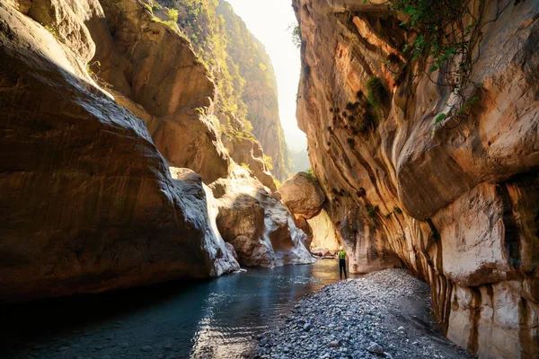
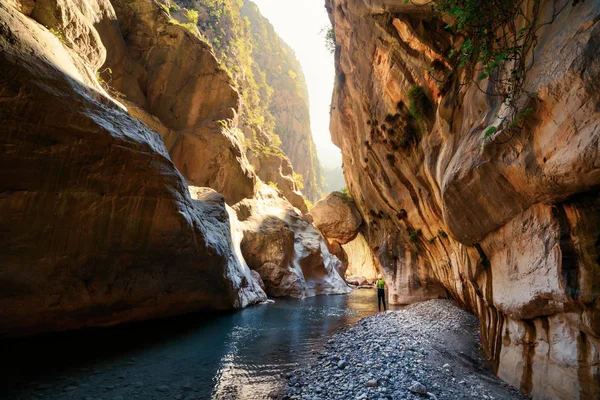

Aytekin Teke
Bu siteyi hazırlayan: Aytekin Teke
Fethiye Hakkında
Fethiye, Muğla iline bağlı, eşsiz doğası, turkuaz denizi ve tarihi dokusuyla Türkiye’nin en güzel tatil beldelerinden biridir. Ölüdeniz, Kelebekler Vadisi, Kayaköy ve Saklıkent Kanyonu gibi doğa harikalarıyla her yıl milyonlarca turisti kendine çeker. Güneşin denizle buluştuğu bu eşsiz beldede, hem huzuru hem macerayı bir arada yaşayabilirsiniz.
Fethiye Tanıtım Videosu
Fethiye'nin güzelliklerini bu kısa videoda keşfedin.
Fethiye'den Manzaralar
 


Gezilecek Yerler
Ölüdeniz
Dünyaca ünlü plaj ve yamaç paraşütü merkezi
Kelebekler Vadisi
Doğal güzellikleri ve sessiz koylarıyla ünlü vadi
Saklıkent Kanyonu
Serin ve maceralı yürüyüş alanı
Kayaköy
Tarihi taş evleriyle eski Rum köyü
12 Adalar Turu
Mavi yolculuk için eşsiz bir tekne turu
Gemiler Adası
Tarihi kalıntılar ve harika manzaralar
Tlos Antik Kenti
Likya uygarlığından kalma antik şehir
Fethiye Çarşısı
Yerli lezzetler ve hediyelik alışveriş
İletişim Bilgileri
Hazırlayan: Aytekin Teke
Telefon: +90 538 367 50 99
Instagram: @aytekinteke2
E-posta: aytekinteke2006@gmail.com